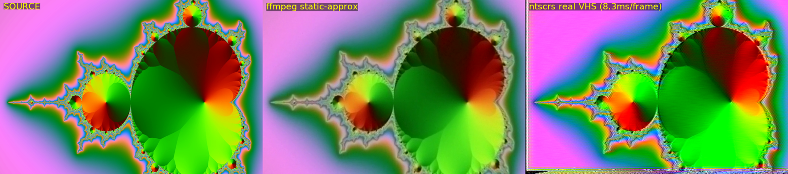
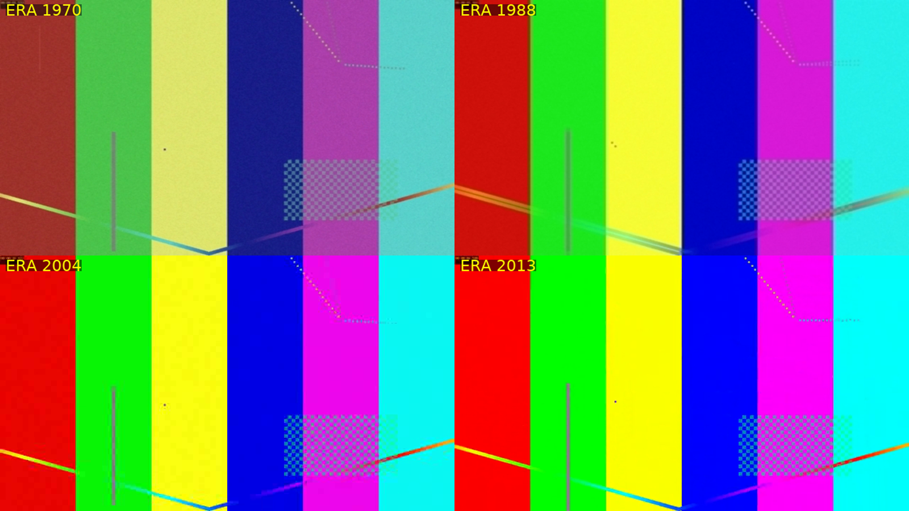
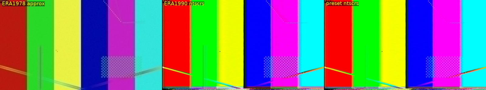
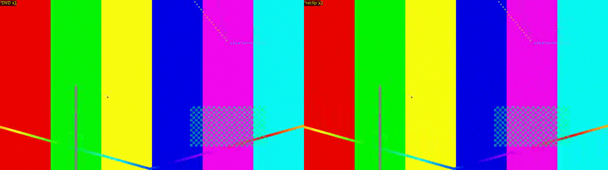

2026 年有人把《金坷垃》AI 高清重制,评论区炸了:“画质太好,反而不习惯了。”
低画质不是缺陷,是一种介质记忆——VHS 的梳齿、翻录带的宏块、CCD 的涂抹,是整整一代人“看见”那段内容的方式。
增强工具消灭它们,Rewind 帮你找回它们。
以下全部为 Rewind 引擎真实输出(测试图卡):




Windows 安装包 / Linux AppImage / macOS dmg —— 发布在即,先 订阅提醒。